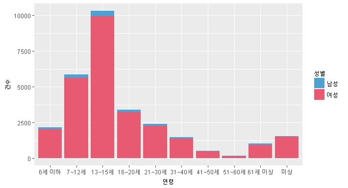
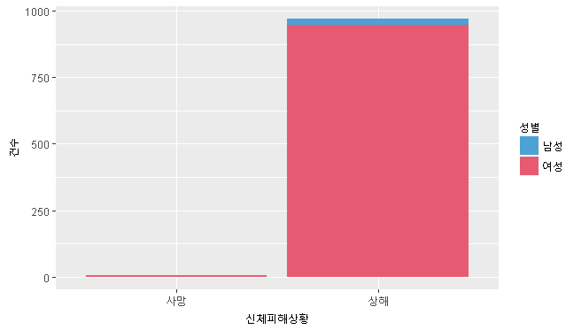

[2014~2015년 전국 성폭력 상세 현황[데이터출처: 대검찰청]
| 
- 성폭력 피해자 대부분은 여성이었고, 그 가운데 절반 이상은 10~20대인 것으로 나타났다.
|

- 성폭력 범죄로 인해 상해를 입거나 목숨을 잃은 피해자 중 여성의 비율이 높았습니다.
|
|
- '담화중', '보행중'이 평균 3750건으로 가장 많이 발생하는 피해시 상황으로 집계됐다.
(전체 피해자 평균 건수 30,463(부재중 16건, 기타 10,790건, 미상 3310건) |
- '타인'에 의한 피해건수가 평균 15000건 이상으로 가장 높게 나왔다.
(국가 9건, 공무원 18건, 기타 909건, 미상 3869건) |